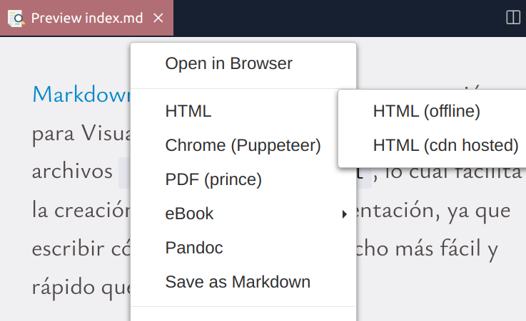
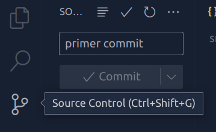
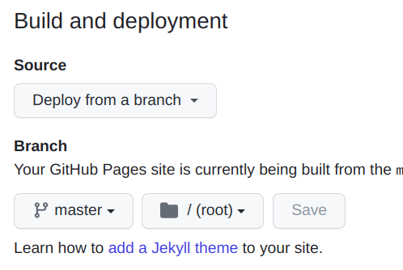

Markdown Preview Enhanced es una extensión para Visual Studio Code que permite transformar archivos .md en archivos .html, lo cual facilita la creación de páginas de documentación, ya que escribir código Markdown es mucho más fácil y rápido que escribir HTML.
Lo único que hay que hacer es crear un archivo .md como éste, abrirlo con la opción Open Preview To The Side dentro de la Command Palette de VS Code. Ahí se abre una ventana a la derecha con una preview del archivo markdown tal como se vería en un browser.
Luego, para convertirlo a HTML lo único que hay que hacer es darle click derecho sobre la preview y seleccionar la opción HTML (cdn hosted). Ahí vamos a ver que se crea un archivo .html con la conversión:

Si abrimos ese archivo con Live Server podemos ver el resultado final 🎉️
Podemos usar markdown para mostrar ejemplos de código en cualquier lenguaje. Todos los bloques de código declarados dentro de triples backticks se muestran automáticamente con syntax highlighting:
const { floor, random } = Math; // Fisher-Yates shuffle: const shuffle = array => { array.forEach( (_, i, arr) => { let j = floor( random() * (i + 1) ); [arr[i], arr[j]] = [arr[j], arr[i]] }) return array }
Además, MPE permite darle estilos de CSS a nuestro markdown. En este ejemplo estoy usando CSS para importar un font de Google Fonts.
Para usar CSS dentro del markdown hay que entrar nuevamente a la Command Palette de VS Code y seleccionar Customize CSS.
Ahí se va a abrir una pestaña dentro de VS Code con el archivo style.less. Dentro de ese archivo vamos a ver una clase de CSS (o, mejor dicho, de Less) llamada .markdown-preview.markdown-preview. Dentro de esta clase podemos agregar los estilos que querramos y se van a ver reflejados en la preview:
.markdown-preview.markdown-preview { /* modify your style here */ }
Por ejemplo, para cambiar los fonts y los colores:
@import url('https://fonts.googleapis.com/css2?family=Ysabeau:ital@0;1&display=swap'); .markdown-preview.markdown-preview { font-family: 'Ysabeau', sans-serif; background-color: rgb(240, 239, 241); }
También es posible insertar videos:
Luego de generar el archivo HTML podemos inicializar un repositiorio usando Source Control de VS CODE y hacer un commit a GitHub:

Luego, en el repositorio en GitHub, entramos a Settings, Pages y seleccionamos Deploy from a branch con la rama master:

Le dan Save y luego de unos segundos le dan refresh al browser y van a ver un cartel con el siguiente mensaje:
Your site is live at https://usuario.github.io/repositorio
Y listo, ya tienen su página online 🥳️
La sintaxis markdown permite crear fácilmente elementos como tablas:
| Columna 1 | Columna 2 |
|---|---|
| Fila 1 | Contenido 1 |
| Fila 2 | Contenido 2 |
Y muchas cosas más 🙂️